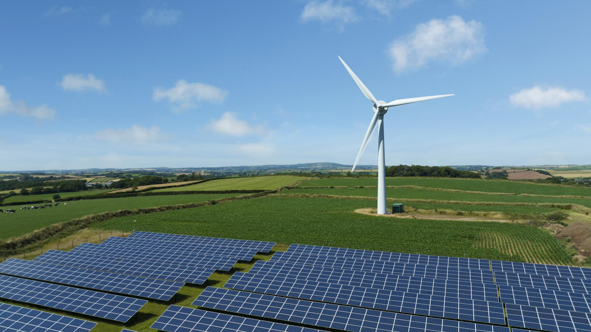
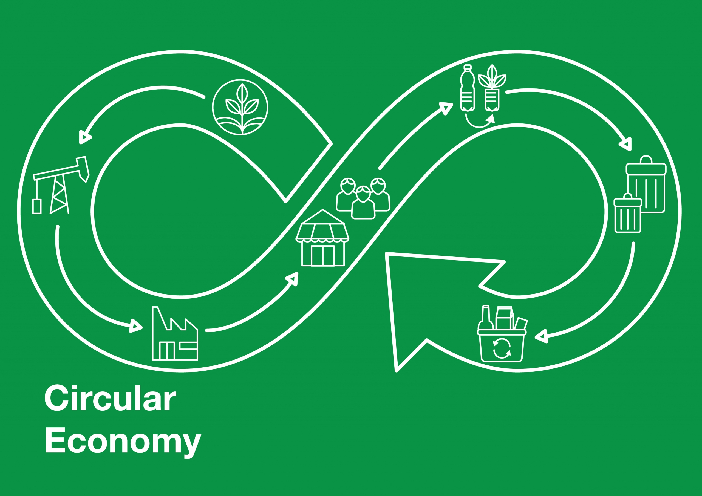
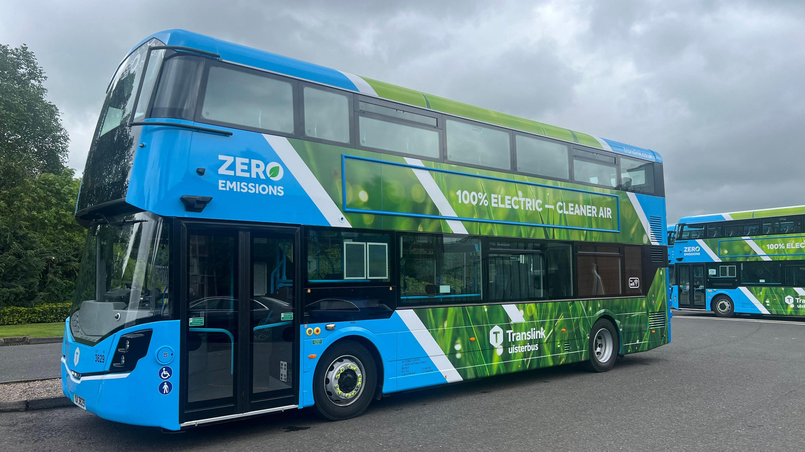

Environmental Initiatives in the UK
Explore major areas of UK sustainability work through accordion and tabbed content. Interactive sections below are keyboard-friendly and screen reader aware.
Initiative Highlights
Councils are improving household waste separation and public recycling infrastructure. Public awareness campaigns are reducing contamination and improving material recovery.
44% household recycling rate in England (recent estimates)
Offshore wind expansion and rooftop solar incentives are helping cut emissions from electricity production while improving long-term energy resilience.
Over 40% of UK electricity often comes from renewables
Expanded EV charging networks and investment in rail and cycling infrastructure support cleaner travel while reducing urban air pollution.
Public transport and EV adoption are key to cutting urban emissions
Visual Data Snapshot
Sustainability in Action


